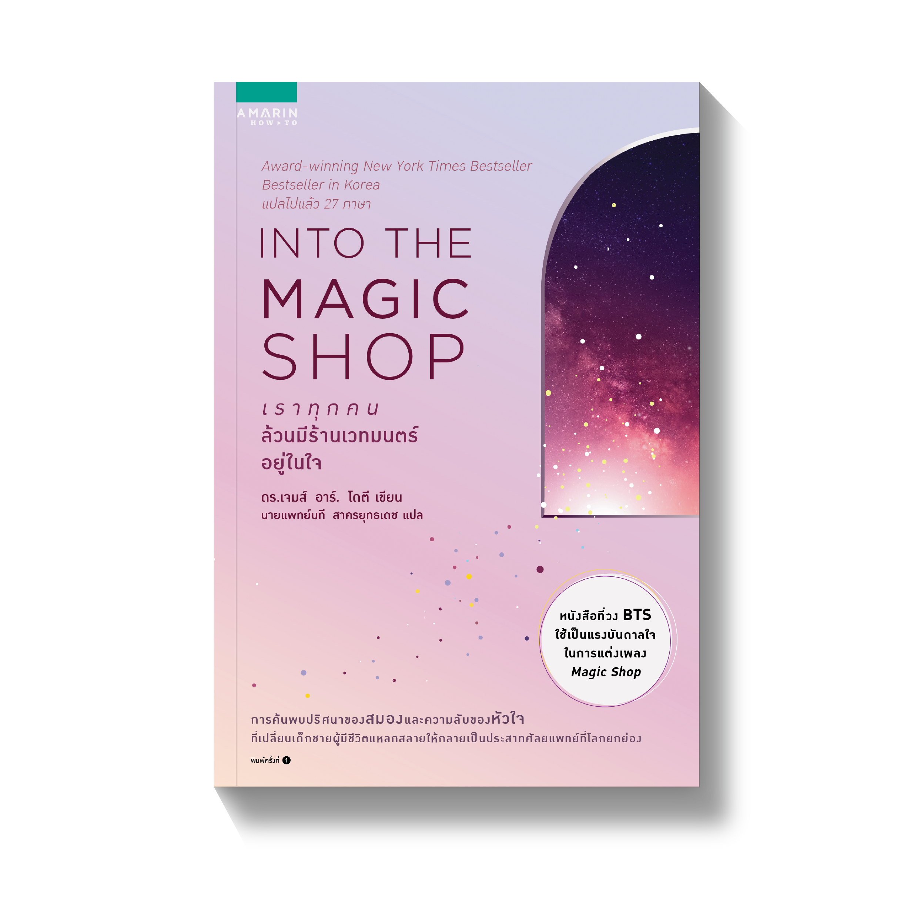

เขียนโดย ดร.เจมส์ อาร์. โดตี(James R. Doty, M.D.)
แปลโดย นายแพทย์นที สาครยุทธเดช

เรื่องราวของ จิม เด็กชายวัย 12 ปีที่บ้านมีฐานะยากจน พ่อติดเหล้าและชอบทำร้ายร่างกายแม่ ส่วนแม่ป่วยออดๆ แอดๆ และเป็นโรคซึมเศร้า รวมถึงพี่ชายที่ชอบเก็บตัวไม่สุงสิงกับใคร วันหนึ่ง จิมปั่นจักรยานไปทั่วเมืองเพื่อตามหาซื้อปลอกนิ้วมายากลที่เขาทำหาย กระทั่งไปเจอร้านมายากลแห่งหนึ่ง จิม ผลักประตูเข้าไปในร้านและได้พบกับ รูธ หญิงชราผู้เป็นแม่ของ นีล เจ้าของร้านมายากล น่าเสียดายที่รูธไม่สามารถหาปลอกนิ้วมายากลให้เขาได้เพราะนีลไม่อยู่ และเธอก็ไม่รู้ว่าของสิ่งนั้น อยู่ที่ไหน แต่รูธได้ยื่นข้อเสนอให้กับจิมว่า ถ้าจิมยอมมาหาเธอที่ร้านมายากลตลอด 6 สัปดาห์นับจากนี้ เธอจะสอนมายากลอย่างหนึ่งให้เขา มายากลที่หาซื้อไม่ได้ตามร้าน และใครจะรู้ว่ามันสามารถเปลี่ยนชีวิตเขาไปได้ตลอดกาล…
หนังสือ Into the Magic Shop เป็นแรงบันดาลใจสำคัญให้กับจองกุก สมาชิกวง BTS ในการแต่งเพลง “Magic Shop” เพื่อปลอบโยนจิตใจแฟนคลับที่กำลังรู้สึกเหนื่อยหรือเจ็บปวด เพลงนี้เปรียบเสมือนพื้นที่ปลอดภัยที่ทุกคนสามารถเข้ามาพักใจได้ โดยมี BTS คอยอยู่เคียงข้างเสมอ แนวคิดจากหนังสือช่วยเสริมพลังแห่งความหวังและความรักในบทเพลงของพวกเขา
จองกุกได้พูดถึงเพลงนี้ในงานเปิดตัวอัลบั้ม LOVE YOURSELF เอาไว้ว่า "อัลบั้มนี้มีเพลงที่เราแต่งให้แฟนคลับชื่อว่า Magic Shop เป็นเพลงที่แสดงให้เห็นถึงความรักและความในใจที่เรามีต่อแฟนคลับ เมื่อคุณรู้สึกเหนื่อย ถ้าคุณเปิดประตูคุณจะพบกับ Magic Shop และ BTS กำลังรอคุณอยู่ และพร้อมจะอยู่เคียงข้างคุณ ผมหวังว่าแฟนๆ จะมีความสุขและได้รับกำลังใจจากเพลงนี้ โปรดเดินเข้ามาที่ Magic shop เมื่อคุณเจอปัญหาครับ"
"สมองและหัวใจที่ทำงานด้วยกันจะทำให้เกิดกลที่วิเศษที่สุด มันไม่เกี่ยวกับการ ลวงตาหรือกลมือใด ๆ กลนี้คือความจริง และเป็นกลที่ยิ่งใหญ่ที่สุดที่คุณก็ทำได้"
Author:
CHANUCH.P
ข้อมูลและรูปปกหนังสือ นายอินทร์
รูปวง BTS BTS